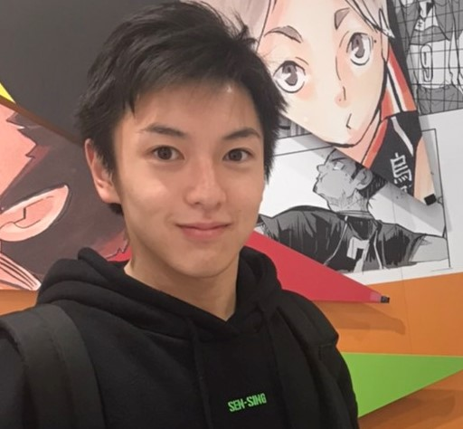

ABOUT ME

INTRODUCTION
初めまして。Webエンジニアの
現在フロントエンドを中心に、Webサイト制作およびWebアプリケーションの開発を行っております。
「質」と「スピード」
また、クライアント様に寄り添った丁寧なコミュニケーションを常に心がけ、
最後まで責任を持って、仕事に取り組ませていただきます。
EDUCARTION
2003年：兵庫県丹波市出身
2019年：プログラミング学習を始める
2022年：福知山成美高等学校卒業